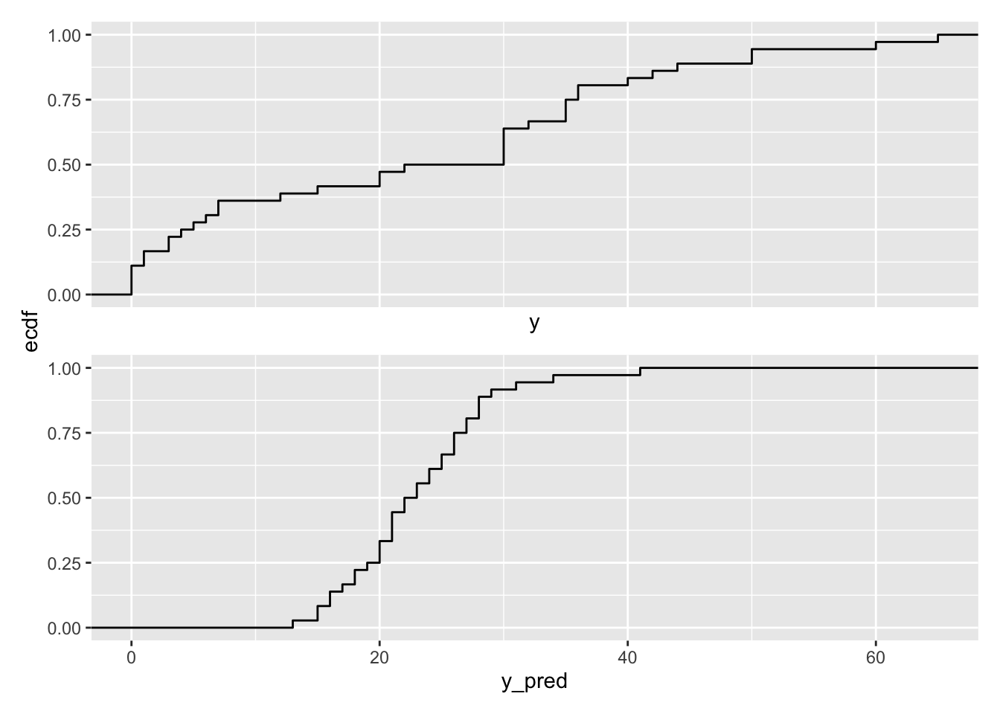
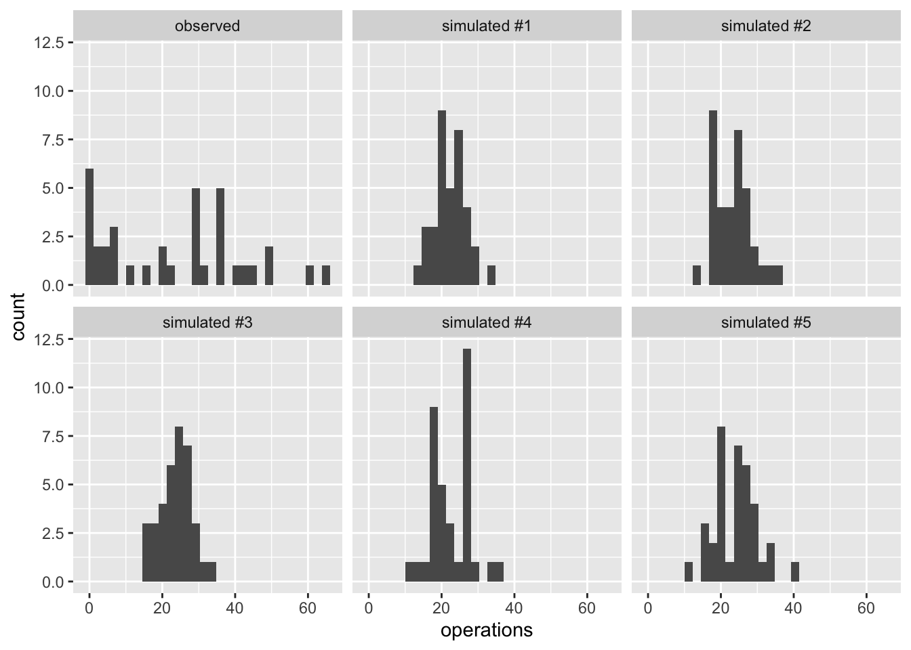
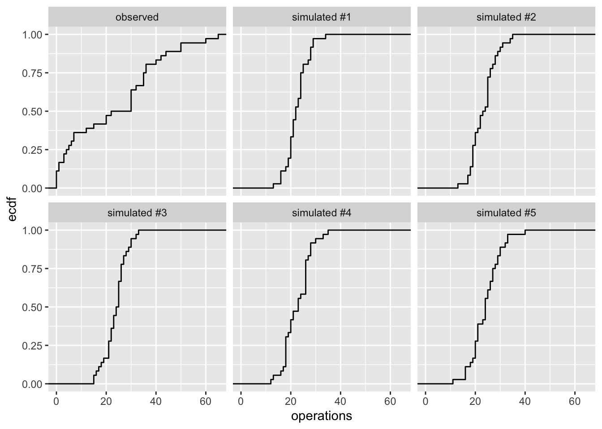
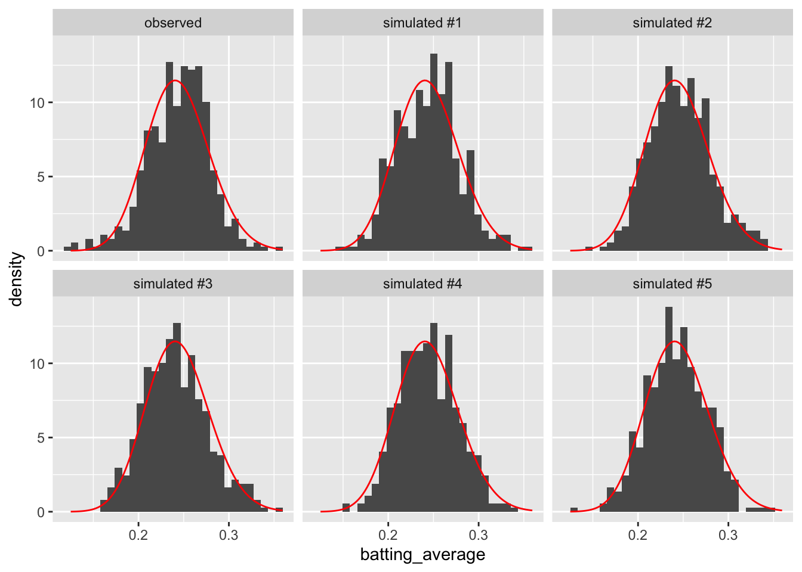
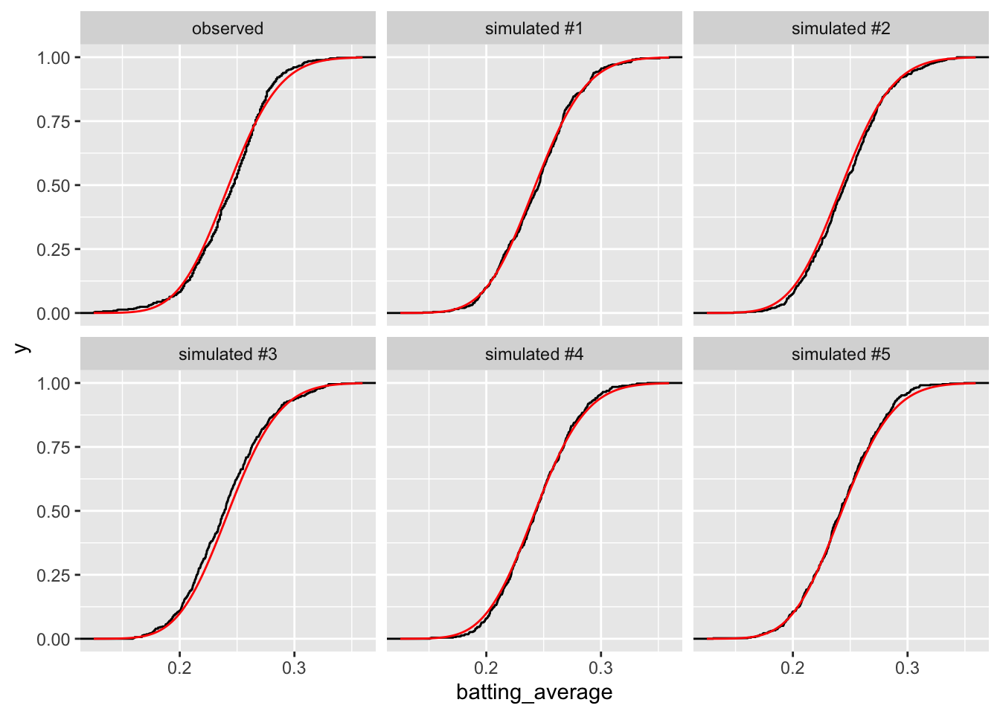
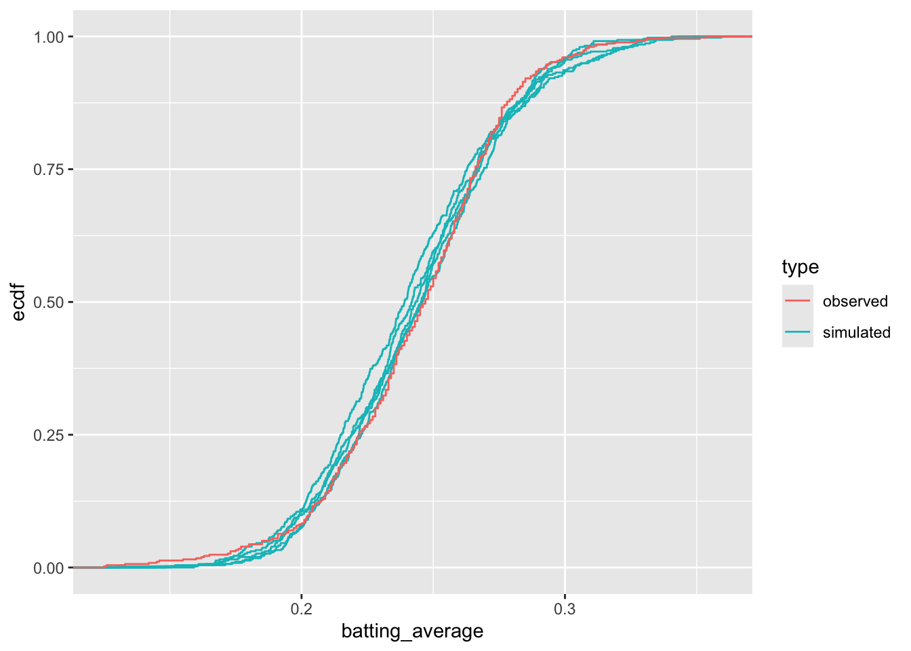

In Bayesian statistics, a popular tool for model evaluation is the posterior predictive distribution. But we might use an analogous approach for models fit with maximum likelihood.
The predictive distribution is just the distribution given the ML estimates. Using our notation above, the predictive distribution is \(f(y; \hat{\theta})\).
We’re going to use this predictive distribution to understand and evaluate our model.
In my view, the predictive distribution is the best way to (1) understand, (2) evaluate, and then (3) improve models.
You can use the predictive distribution as follows:
Fit your model with maximum likelihood.
Simulate a new outcome variable using the estimated model parameters (i.e., \(f(y; \hat{\theta})\)). Perhaps simulate a several for comparison.
Compare the simulated outcome variable(s) to the observed outcome variables. You can use histograms and or plots of the ECDF.
There are two reasons why an observed data set might not look like the distribution assumed by the model.
First, the model might not capture the observed data well. For example, you might use a normal distribution to model a variable that isn’t similar to a normal distribution.
Second, the deviations between the observed data and model might be consistent with noise. For example, if you take 25 draws from a normal distribution and draw a histogram of those values, the histogram will not look exactly normal. It will be lumpy, bumpy, and/or skewed, simply due to noise.
When we compare the observed data with the predictive distribution, we are keeping both of these deviations in mind. We simulate several fake data sets to understand how the outcome might change from sample to sample if the assumed distrubtion were correct. The we compare the patterns across the simulated fake data sets to the observed data set: are the two easily distiguishable?
3.1 Example: Poisson Distribution
Earlier, we fit a Poisson distribution to data from Holland (2015).
Holland, Alisha C. 2015. “The Distributive Politics of Enforcement.”American Journal of Political Science 59 (2): 357–71. https://doi.org/10.1111/ajps.12125.
# compute ml estimates of poisson parameterml_est <-mean(y)print(ml_est, digits =3)
[1] 23.2
# simulate from predictive distributionn <-length(y)y_pred <-rpois(n, lambda = ml_est)print(y_pred[1:10])
[1] 28 24 21 21 34 22 15 22 18 18
print(y[1:10])
[1] 7 0 20 1 1 50 3 0 36 32
Simply printing a few results, we can immediately see a problem with data, when compared with the raw data
To see it even more clearly, we can create a histogram of the observed and simulated data.
# load packageslibrary(patchwork)# make plotgg1 <-ggplot() +geom_histogram(aes(x = y)) +xlim(min(y), max(y))gg2 <-ggplot() +geom_histogram(aes(x = y_pred)) +xlim(min(y), max(y))gg1 / gg2 +plot_layout(axes ="collect") # stitch these together w/ patchwork
We can use plots of the ECDFs rather than histograms.
# make plotgg1 <-ggplot() +stat_ecdf(aes(x = y)) +xlim(min(y), max(y))gg2 <-ggplot() +stat_ecdf(aes(x = y_pred)) +xlim(min(y), max(y))gg1 / gg2 +plot_layout(axes ="collect") # stitch these together w/ patchwork

For a more accurate and complete comparison, let’s simulate five fake data sets. By using five fake data sets, we’ll see clearly how much of the variation might be due to noise (across the five fake data sets) and how the observed data set differs from the model.
# create observed data setobserved_data <-tibble(operations = y, type ="observed") %>%glimpse()
# simulate five fake data setssim_list <-list()for (i in1:5) { y_pred <-rpois(n, lambda = ml_est) sim_list[[i]] <-tibble(operations = y_pred, type =paste0("simulated #", i))}# combine the fake and observed data setsgg_data <-bind_rows(sim_list) %>%bind_rows(observed_data) %>%glimpse()
# plot the observed and fake data setsggplot(gg_data, aes(x = operations)) +geom_histogram() +facet_wrap(vars(type))

# make plots of ecdfggplot(gg_data, aes(x = operations)) +stat_ecdf() +facet_wrap(vars(type))

3.2 Example: Beta Distribution
Now let’s return to our beta model of batting averages from Section 1.5.
Now let’s simulate five fake data sets from the predictive distribution and compare that to the observed data. In this case, the beta model fits the data pretty well, so let’s add a pdf of the fitted model to the plots as well for even more precise comparisons of the real and fitted data.
# create a dataframe of observed dataobserved_data <- bstats %>%mutate(type ="observed") %>%select(-player_id) %>%# variable not needed, makes things neater laterglimpse()
# plot histograms of real and fake dataggplot(gg_data, aes(x = batting_average)) +geom_histogram(aes(y =after_stat(density))) +facet_wrap(vars(type)) +stat_function(fun = dbeta, args =list(shape1 = theta_hat$est[1], shape2 = theta_hat$est[2]), color ="red")

On the whole, we see hear a close correspondence between the observed and simulated data. That suggests that our model is a good description of the data.
If we use the ECDFs rather than the histograms, we see a similarly well-fitting model.
# plot histograms of real and fake dataggplot(gg_data, aes(x = batting_average)) +stat_ecdf() +facet_wrap(vars(type)) +stat_function(fun = pbeta, args =list(shape1 = theta_hat$est[1], shape2 = theta_hat$est[2]), color ="red")

It’s really hard to tell this apart!
To make the comparison even more refined, let’s put all the curves in the same panel.
# separate the labels of the simulated data into two partsgg_data2 <- gg_data |>separate(type, into =c("type", "version")) |>glimpse()
# plot histograms of real and fake dataggplot(gg_data2, aes(x = batting_average, color = type, group = version)) +stat_ecdf()

If we look really hard, we can start to see some small differences between these the observed data and the model, but the model is a really good one. With only two parameters, the beta distribution does an excellent job of recreating the distribution of the observed data.